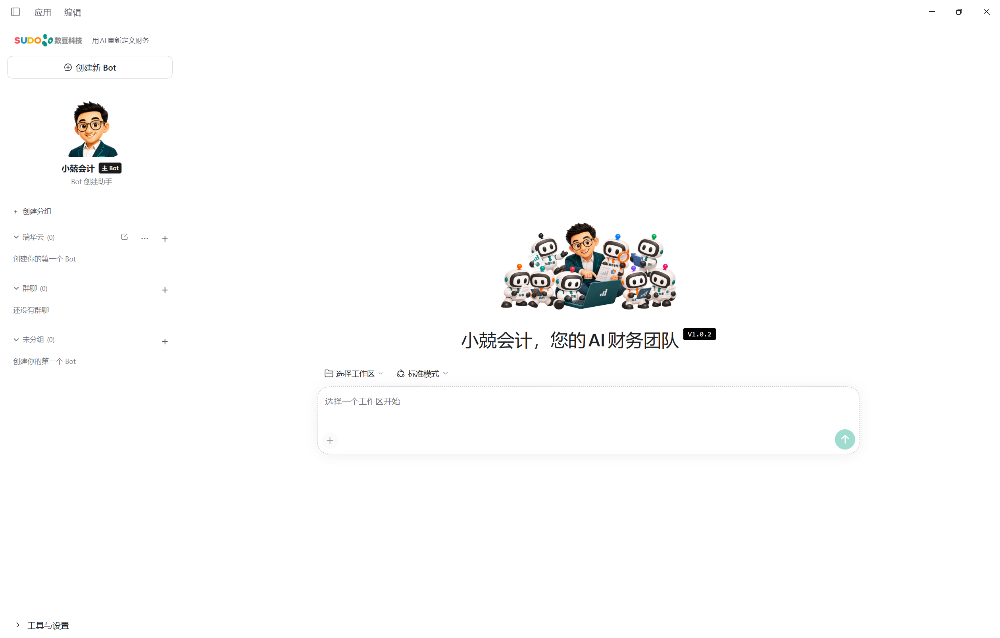
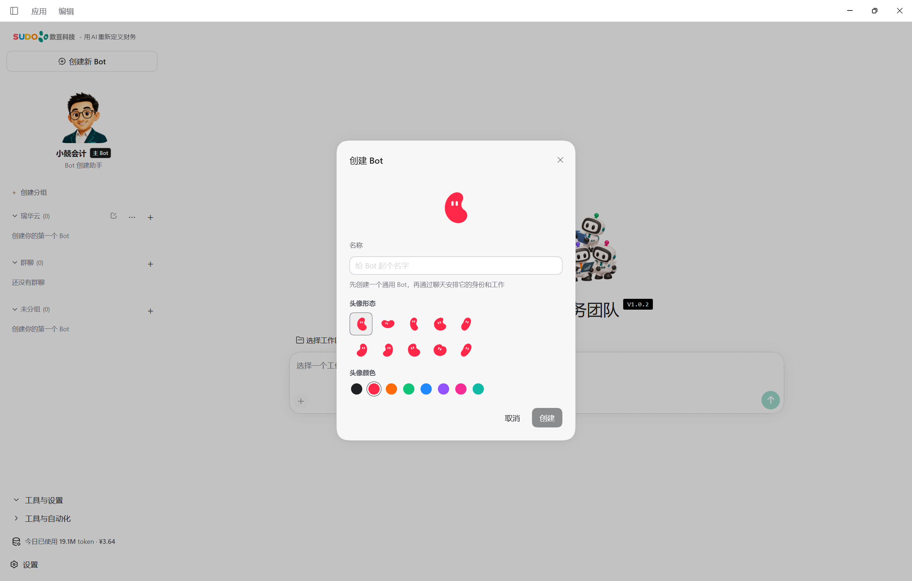
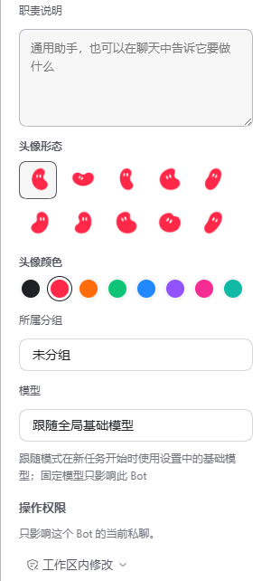
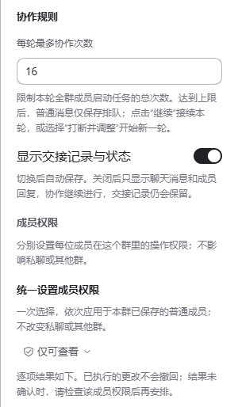
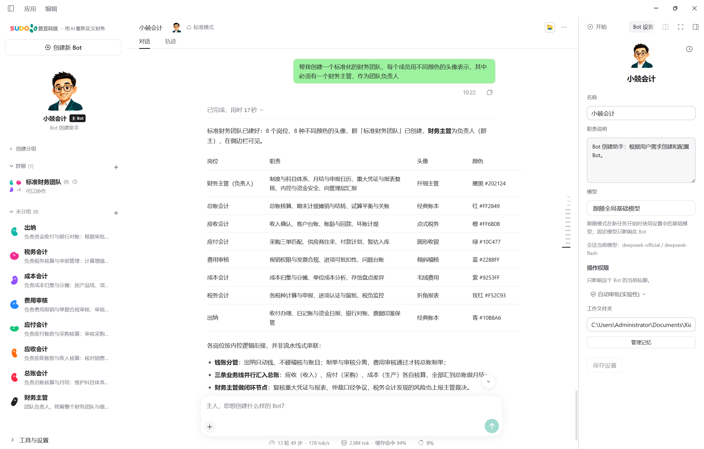

00 / 认识你的团队
一支团队，一起做财务。
让不同的 Bot 分别负责票据整理、账务处理和财务复核。可以单独交办，也可以建群协作，由你确认目标、跟进进度、验收结果。

主 Bot · 小兢会计
告诉它你需要哪些成员，它可以帮助创建 Bot、配置职责并组建群聊。
普通 Bot
每个 Bot 有独立的职责和私聊。整理一张票据，也可以直接交给它。
群聊协作
把普通 Bot 加入群聊，按分工处理同一项任务；可选一位群负责人统筹。
01 / 连接模型
先连接模型，再开始工作。
- 安装小兢会计团队版。
打开收到的 Windows x64 安装包，完成安装后启动应用。
- 配置模型。
按照首次启动引导，或打开「设置 → 模型」，添加模型服务商和 API Key，选择全局基础模型。
- 确认可以对话。
选择左侧主 Bot「小兢会计」，发送一条简短消息。收到回复后，就可以创建你的财务团队。
02 / 创建 BOT
先请一位新同事加入。
点击左侧「创建新 Bot」，填写名称，选择豆子头像和颜色，再点击「创建」。也可以直接告诉主 Bot 要创建哪些成员。

一次创建团队并建群，可以这样对主 Bot 说：
帮我创建票据整理、账务处理、财务复核三个 Bot，分别设置清楚职责，再组成「财务团队」群聊，由财务复核负责统筹。
03 / 设置职责
把每位成员的工作交代清楚。
选择一个普通 Bot，打开右侧「Bot 设置」。填写职责说明，按需选择模型并保存；也可以在私聊中安排具体任务。
- 职责说明
- 写清负责的环节、使用的资料、交付的内容和检查标准。例如：整理票据信息，输出明细表，并单列缺失或存疑项目。
- 模型
- 跟随全局基础模型，或为这个 Bot 单独指定模型。
- 工作文件夹与权限
- 查看 Bot 的固定工作文件夹，按任务设置操作权限。私聊与各群聊的成员权限分别设置。
- 记忆
- 为 Bot 或群聊保存常用背景；需要团队共用的内容，可明确分享至团队记忆。

04 / 组建群聊
把分工串成一条工作流程。
点击左侧「群聊」旁的 +，输入群名、勾选普通 Bot，可指定一名「群负责人」统筹，再创建群聊。群内职责留空时沿用 Bot 自身职责，也可单独填写。


05 / 开始协作
给团队一个清楚的任务。
在群聊中说明目标、提供材料，并约定交付格式。成员使用群工作文件夹共享资料，群负责人按分工协调推进。
根据我提供的本月票据，票据整理 Bot 先输出明细并列出缺失资料；账务处理 Bot 根据确认后的资料给出分录建议；财务复核 Bot 检查金额、依据和待确认事项，最后汇总交付给我验收。
通过成员名称和交接记录查看进展。打开交付文件，核对明细、依据与待确认事项，再决定是否补充资料或进入下一步。成员任务显示「已完成」后，仍需由你验收成果。
06 / 掌握节奏
需要继续、调整，还是停一下？
- 补充消息
- 普通消息加入队列，当前任务继续执行；暂停期间发送的消息会等待恢复后处理。
- 暂停 / 继续
- 「暂停」停止后续接话，当前成员先完成任务。显示「已暂停接话」时，查看下方原因，再点击「继续」；达到本轮协作次数上限也会暂停。
- 打断并调整
- 输入新的安排，选择「打断并调整」，中断当前任务并按新指令开始新一轮。
- 停止
- 结束本轮协作，已保存的结果保留，已完成的操作不会撤销。之后发送新指令可开始新一轮。
Bot 没有回复，应该检查什么？
先查看是否等待审批、确认或已暂停，再检查「设置 → 模型」中的服务商、API Key 和所选模型，以及网络连接与服务商余额。
可以只看对话，不看交接记录吗？
可以。在群设置中关闭「显示交接记录与状态」。协作照常进行，交接记录与已交付的文件卡片仍会保留。
如何反馈问题？
请提供应用版本、复现步骤和去除隐私信息的截图。反馈问题